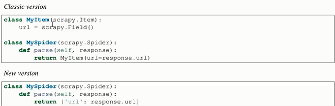
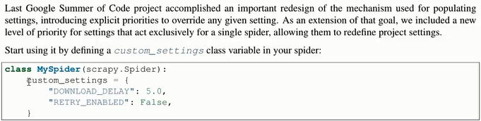
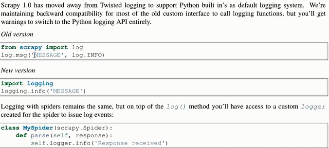
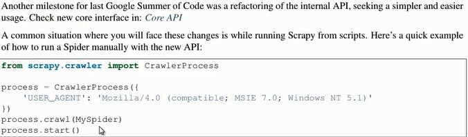

An open source and collaborative framework for extracting the data you need from websites.
①Fast and powerful：write the rules to extract the data and let Scrapy do the rest
②Easily extensible：extensible by design, plug new functionality easily without having to touch the core
③Portable, Python：written in Python and runs on Linux, Windows, Mac and BSD
1、Support for returning dictionaries in spiders
Declaring and returning Scrapy Items is no longer necessary to collect the scraped data from your spider,you can now return explicit dictionaries inatead.

2、Per-spider settings

3、Python Logging

4、Crawler API refactoring

1、国外公司（简单举例）
①Scrapinghub: From the creators of Scrapy, Scrapinghub is a leading
technology and professional services company, providing successful web crawling and data processing solutions.
②Parsely: Uses Scrapy to scrape articles from a hundred of news
sites. His CTO talks about Scrapy in this talk.
③DirectEmployers Foundation: Uses Scrapy to scrape job postings from many websites, which are published on the My.jobs site.
④BiteHunter: Uses Scrapy to crawl deal sites and restaurant directory sites, to provide real time aggregator and search engine for
dining.
⑤InnerBalloons: Uses Scrapy to scrape data for products including
local search content generation, reputation management, web presence management and marketing analytics.
2、国内公司（简单举例）
职位名称 公司名称
①python 北京易富成科技有限公司
②python开发工程师 武汉绿色网络信息服务有限责任公司
③爬虫开发工程师 北京仁科互动网络技术有限公司
④兼职python开发工程师 乐飞天下信息技术（北京）有限公司
⑤python开发实习生 乐飞天下信息技术（北京）有限公司
1、解scrapy是什么
2、有那些有点
3、新版本的特性
【本文由麦子学院独家原创，转载请注明出处并保留原文链接】